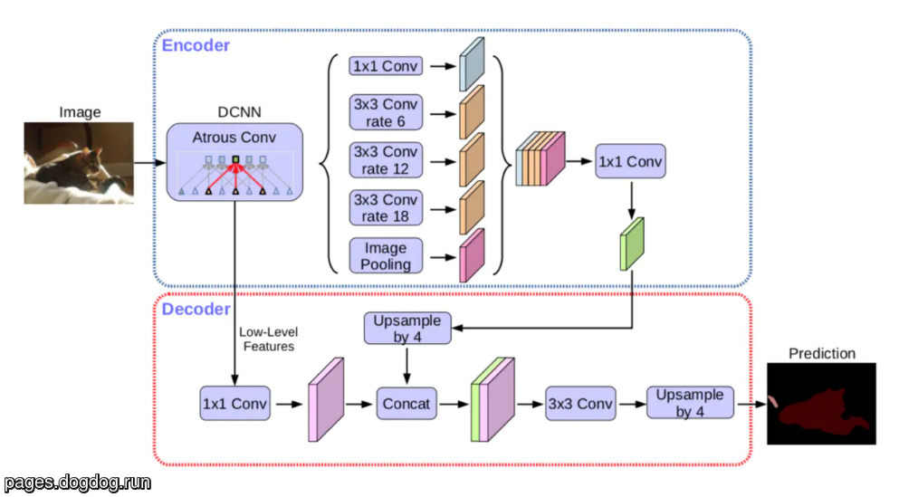

DeepLab
Table of Contents
1. DeepLab
https://arxiv.org/pdf/1706.05587.pdf 2017/12
DeepLab 是 google 提出的 semantic segmentation 模型, 最新的模型是 v3 和 v3+, 主要思想是利用多个不同 dilation rate 的 Dilated Conv2D 来融合不同尺度上的特征, 有点类似于 Spatial Pyramid Pooling
1.1. DeepLabV3 Network

- backbone
- block{1,2,3} 都是 resnet 的 block, 并且通过指定 stride = 2 达到 downsample 的效果, 所以 output stride 依次是 4, 8, 16
- block4 没有再做 downsample, 并且使用了 dilation rate = 2 的 dilated conv2d
ASPP
后面接了一个称为 ASPP (Atrous Spatial Pyramid Pooling) 的模块, 它与 SPP 类似, 分别使用 4 个不同 rate 的 dilated conv2d, 每个 conv2d 的输出都是 (h, w, 256)
除了 ASPP, 还有一个 Image Pooling 层, 它实际是对 block4 做了一个 GlobalAveragePooling2D 后再通过 1x1 conv2d 和 bilinear interpolation, 最终也是输出 (h, w, 256)
upsample
ASPP 和 image pooling 按 channel concat 起来, 然后通过 1x1 conv 输出 (h, w, C), C 为最终的 class 个数. deeplab_v3 最后会使用 bilinear interpolation 实现的 upsampling 得到最终的输出,但在上面的图中这一步没有画出来.
https://github.com/leimao/DeepLab-V3/blob/master/model.py
def get_model(): # resnet backbone feature_map = self.backbone_initializer(base_architecture) # aspp pools = atrous_spatial_pyramid_pooling(inputs=feature_map, filters=256, regularizer=self.regularizer) # upsample logits = tf.layers.conv2d(inputs=pools, filters=self.num_classes, kernel_size=(1, 1), name='logits') outputs = tf.image.resize_bilinear(images=logits, size=(self.target_height, self.target_width), name='resized_outputs') return outputs def atrous_spatial_pyramid_pooling(inputs, filters=256): height = tf.shape(inputs)[1] width = tf.shape(inputs)[2] # Atrous Spatial Pyramid Pooling # Atrous 1x1 aspp1x1 = tf.layers.conv2d(inputs=inputs, filters=filters, kernel_size=(1, 1), padding='same', kernel_regularizer=regularizer, name='aspp1x1') # Atrous 3x3, rate = 6 aspp3x3_1 = tf.layers.conv2d(inputs=inputs, filters=filters, kernel_size=(3, 3), padding='same', dilation_rate=(6, 6), kernel_regularizer=regularizer, name='aspp3x3_1') # Atrous 3x3, rate = 12 aspp3x3_2 = tf.layers.conv2d(inputs=inputs, filters=filters, kernel_size=(3, 3), padding='same', dilation_rate=(12, 12), kernel_regularizer=regularizer, name='aspp3x3_2') # Atrous 3x3, rate = 18 aspp3x3_3 = tf.layers.conv2d(inputs=inputs, filters=filters, kernel_size=(3, 3), padding='same', dilation_rate=(18, 18), kernel_regularizer=regularizer, name='aspp3x3_3') # Image Level Pooling image_feature = tf.reduce_mean(inputs, [1, 2], keepdims=True) image_feature = tf.layers.conv2d(inputs=image_feature, filters=filters, kernel_size=(1, 1), padding='same') image_feature = tf.image.resize_bilinear(images=image_feature, size=[height, width], align_corners=True, name='image_pool_feature') # Merge Poolings outputs = tf.concat(values=[aspp1x1, aspp3x3_1, aspp3x3_2, aspp3x3_3, image_feature], axis=3, name='aspp_pools') outputs = tf.layers.conv2d(inputs=outputs, filters=filters, kernel_size=(1, 1), padding='same', kernel_regularizer=regularizer, name='aspp_outputs') return outputs
1.2. DeepLabV3+ Network

DeepLabV3+ 参考了 UNet 的 encoder-decoder 结构:
- 使用 DeepLabV3 做 encoder
- 通过一个 decoder 代替了 DeepLabV3 中最后一步 bilinear interpolation
Backlinks
PSPNet (PSPNet): pspnet 是一个 semantic segmentation 模型, 它利用 Spatial Pyramid Pooling 获得全 局上下文信息. 它的结构与 DeepLab 非常像: 前者使用不同尺度的 pooling 叠加, 后者使 用不同尺度的 dilation conv 叠加.
Semantic Segmentation (Semantic Segmentation > Overview): - (c) 并行的输入或中间层的融合, 例如 deeplab, pspnet, icnet
Semantic Segmentation (Semantic Segmentation > DeepLab): DeepLab